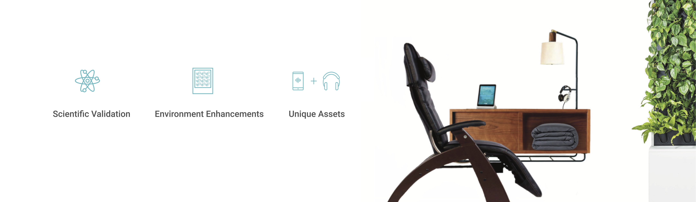
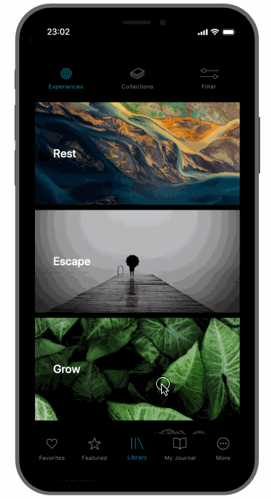
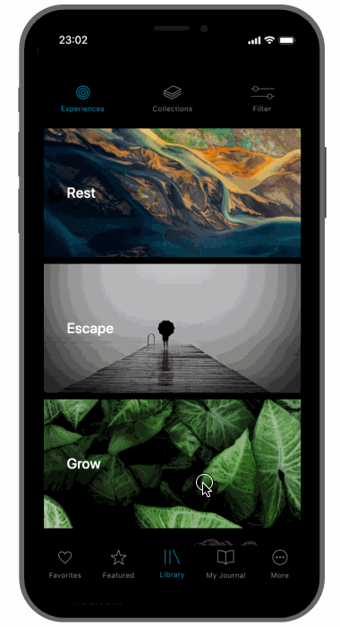
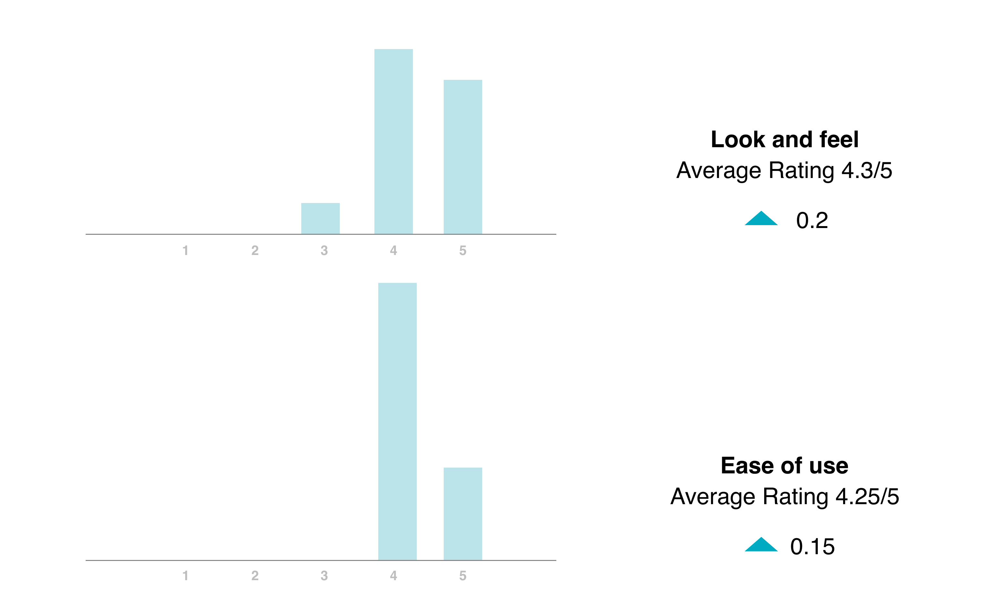

2020 - present
Mindbreaks program transforms wellness rooms by utilizing evidence-based products (dynamic lighting, noise-isolation headphone, air purification, biophilia, etc.) and programming to deliver short, effective, and restorative breaks.

The Mindbreaks app was originally a tablet app, as a part of the office wellness program. As new business opportunities came in, the business development team requested to update the app. After conducting comprehensive market research and organizing rounds of stakeholder workshops, my team decided to redesign the app and promote the app in the mass market with the focus on student housing residents.
Use cases and storyboards were abstracted based on the insight of workshops. The first version of the prototype was created in a week.
 

From competitor analysis, I saw the opportunity to provide personalized content and status tracking function to increase user engagement.
20+ user interviews are conducted to test users' understanding of the content, grouping, and the navigation of the app. Making selections, scheduling events, checking profiles, and checking status are the major task that users are expected to perform without barriers.
The result shows that the design gave users a great first impression. Some users even thought it exceeded their expectations. Almost all users successfully accomplished: filter search, favorite, check favorited content, navigate to the previous screen, navigate to landing screen, schedule mindful minutes, find a meditation, repeat a meditation, etc.

However, users are confused about the difference between "Library" and "Collection" on the app. More than half of the users thought that "My Journal" did not represent its content.

A new prototype was created in a very short time based on the feedback collected during the first interview.

A new idea was brought up during the stakeholder meeting: full-screen background may look more intuitive, hiding the time options under a timer icon may make the design look more simple and clean.
Another round of interviews was organized to test the new ideas and design revision. New terminology "Experience", "You" garnered a better reaction than the previously-used "Library" and "My Journal". Some users didn't notice the newly designed mini track bar at the bottom until prompted.

During the interview, the younger generation, especially Spotify users, learned how to use a minibar to play, pause, get back to the full play screen, and exit the minibar faster than the older users. Almost all interviewees like the convenience of the minibar. But some of them are concerned they won't use it during guided meditation.
All users felt the Status screen met their expectations, but the icons (infographic) made some of them confused. Half of the users thought the information on the Achievement screen is helpful, but the motivation for users to use this function needs to be further designed.

In general, users are satisfied with the look and feel of the app. Image selection is the key factor that impacted users' opinions. Users felt it was easy to navigate and find things. With the second round of revision, users' ratings on the look and feel increased by 0.2, and rating on ease of use increased by 0.15.
During interviews, users also pointed out a couple of good suggestions, such as: adding a short tutorial for first time users, adding a quick survey at the end of the track "Do you feel relaxed?", improve the user engagement strategies on status and achievement. However, the design and development of those features have to be implemented in phase 2 because of the tight schedule and time limitation.